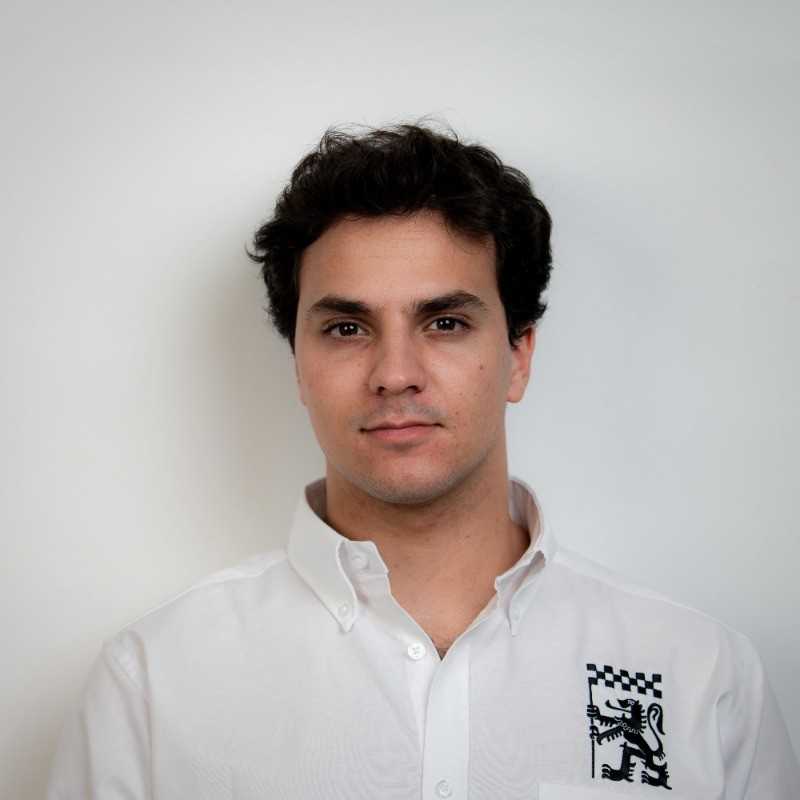
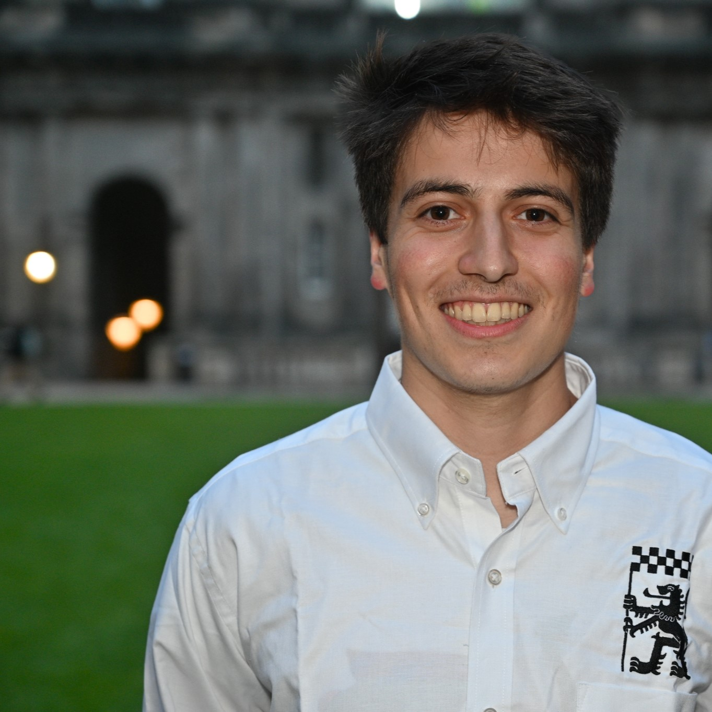
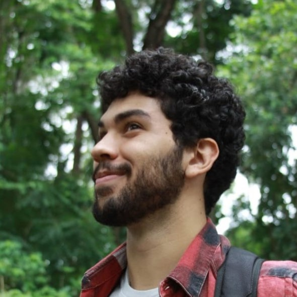

I study mechanical engineering at the University of Edinburgh and studied computer science, mechanical engineering, and aerospace engineering at the University of Minnesota for four years for my secondary school education. Finally, I am an amateur cinematographer, avid motorsports driver, and 70's classic rock enthusiast.
Education

University of Edinburgh
– Grade: First Class (A2).
– Completed 6 classes with 120 UK credits
– Edinburgh University Formula Student (EUFS) member
– Volunteered for EUFS in Open Days and Offer Holder Days
– Lab work: EUFS, Structural Mechanics, Fluid Mechanics

University of Minnesota — Twin Cities
– 3.66 Cumulative GPA, 4.0 Technical GPA
– 3 Dean’s List Honours, LPE: Portuguese Language Proficiency
– Completed 17 university classes with 70 US credits. Normal university
classes taken full time as secondary school credit.
– Followed the UMN Mechanical Engineering & Computer Science degree tracks,
including 3rd year classes, multi-degree matrix differential equations and
algorithm coding.
Letters of Recommendation

Maurice Sawalha
I had the pleasure of working with Paul Wang during the 2024–2025 Formula Student season at the University of Edinburgh, where I served as Technical Director and Paul worked as a Vehicle Dynamics Engineer and later as a lead suspension designer. Edinburgh University Formula Student (EUFS) designs and manufactures single-seater open-wheel race cars and is the current long-standing champion in the FS-AI class as of this year, 2025.
Paul made a huge contribution to our growing Vehicle Dynamics team. He was responsible for modelling and designing suspension assemblies in Simscape and SolidWorks, as well as developing key infrastructure by creating an in-house suspension geometry optimiser from scratch using Simscape multibodies. His optimiser, paired with our in-house lap time simulator, enabled us to validate and quantify the performance benefits of multiple suspension geometries. His work was a key influence on our final designs presented at FSUK 2025, where the judges commended the depth and robustness of his models, a contribution that helped secure the team’s 6th place finish. He was the youngest member of the design team.
What stood out most about Paul was his initiative and reliability. He demonstrated strong research skills, resourcefulness, and initiative that accelerated his progression to a lead designer. I worked with him on multiple projects, and he was consistently the first to offer support whenever it was needed, regardless of the task. On one occasion, he came directly from a ten-hour flight to the lab to assist when we were short-handed for an urgent tyre repair. His ability to work well both independently and collaboratively makes him well suited for any engineering position.
Beyond his technical skills, Paul is a high-achieving student, currently on track for a first-class degree in Mechanical Engineering at the University of Edinburgh. He balances his academic success with extracurricular commitments, including serving as a qualified sailing instructor, which further demonstrates his leadership and communication skills.
Working with Paul has been a pleasure. His commitment to this role and passion for learning made him a dependable and proactive member of the team. I am confident he would demonstrate the same qualities should he join your organisation.

Roberto Fregonara
I am pleased to write this letter in strong support of Mr. Paul Wang.
Having had the privilege of having worked with Paul as his Vehicle Dynamics team lead in the Edinburgh University Formula Student team during the 2024-25 academic year, I can confidently attest to his exceptional technical skills, strong analytical mindset and passion for automotive engineering and vehicle dynamics. I have witnessed his transformation from a shy first-year student into a confident leader, both within the vehicle dynamics sub-team and across the wider EUFS organization.
Paul has built a solid foundation in vehicle dynamics, developing a strong portfolio at Edinburgh University that spans kinematics, car design, and lap time simulation.
He specialised in the optimisation of the suspension and steering systems, steady-state lap time simulators and overall vehicle performance. He developed a suspension geometry optimisation tool from scratch on MATLAB and Simulink able to recreate the suspension behaviour under any condition. He efficiently used this tool to make informed technical decisions aimed at optimising the designs of the vehicle model. He designed the suspension and steering system of SISU26E, the latest EUFS vehicle prototype. Not only that, but he developed a steady-state lap time simulator aimed at allowing him to make high-end decisions and validating aerodynamic and powertrain decisions.
His contributions were instrumental in refining simulation models and translating theoretical knowledge into practical applications, demonstrating both technical expertise and teamwork. His ability to integrate analytical modelling with real-world constraints makes him an excellent candidate for your internship.
Beyond his technical expertise, Paul has a strong sense of community, communication and problem-solving skills. His ability to collaborate across disciplines was evident in his work with the Formula Student team, where he worked closely with engineers from the aerodynamics, chassis, and powertrain departments. He particularly shined when presenting and defending his designs in front of a panel of Formula 1 engineers at FSUK 2025 where he helped EUFS place 6th in the Design Presentation.
His adaptability is further demonstrated by his diverse project experience, which has required him to quickly grasp new concepts and apply them effectively. Moreover, his proactive attitude and commitment to continuous improvement make him a motivated and driven engineer. His presence, eagerness to learn, wittiness, and drive for perfection make him not only a valuable team member but also someone who fosters a positive work environment.
Given his combination of academic excellence, technical expertise and proven leadership skills, I give Paul my highest recommendation and am confident that he will make a significant contribution to your internship.
It is with great pleasure and the highest of recommendations that I pen this letter on behalf of Paul Wang, a young man who has proven himself to be in the top 1% of sailors I've had the privilege to coach over my 20-year as a sailing coach. I've coached Paul for six years, during which he has consistently demonstrated exceptional skill and dedication as a member of the sailing race team at the Minneapolis Sailing Center.
Paul possesses an unparalleled work ethic, tirelessly dedicating himself to mastering his craft. He is a beacon of respect and kindness, setting a sterling example for his peers and embodying the true spirit of teamwork and camaraderie. His willingness to lend a hand to fellow sailors is not just commendable; it is a testament to his character.
Just a few weeks ago, I witnessed firsthand Paul's commitment to mentorship. He took a younger sailor under his wing, sharing his knowledge and expertise. Together, they navigated the complexities of sailing a completely new vessel. Paul exhibited patience and dedication, guiding his younger teammate through the setup, on the water, and the breakdown at day's end. This act of kindness and leadership was not out of character for Paul; it reflected the consistency and excellence he has displayed over the past six years.
In addition to his prowess on the water, Paul has demonstrated a remarkable aptitude in the realm of computer science and engineering. As a data scientist with 12 years of experience, currently serving as Chief of Backend Development and Artificial Intelligence at Intellivisit Solutions, I can attest to Paul's impressive ability to grasp complex topics within predictive analytics. Our extensive discussions on Bayesian inference, causality, and search have revealed a depth of understanding and intellectual curiosity that one would not typically expect from a high school student. Yet, with Paul, this level of engagement and mastery is the norm.
Paul Wang is a stellar candidate for any position, poised to contribute meaningfully to any industry or academic community. His skills in practice and learning are well-honed, and his resilience and tenacity are commendable. Above all, Paul is a humble, kind-hearted individual; a truly wonderful person and teammate. He is destined for greatness, and I am confident that he will excel in all his future endeavors.
 Google
Google
Cyber Threat Intelligence at Columbia University focused on intelligence as a discipline, cyberspace, and the actors that
operate in this environment. This course encompassed the network level and the external factors
that drive operations in cyberspace.
Of the bright and motivated students who completed this course, Paul Wang performed most
successfully. Throughout the entire course, he did his work promptly, thoroughly, and intelligently.
The students were required to participate in current events and read a large amount of text every
night. I am confident Paul completed the readings based on his thoughtful comments in class.
Further, students wrote a policy memo summarizing the key findings in the 2018 National Cyber
Strategy/President Biden’s Executive Order. Paul covered all of the key areas and produced a
document that any government office would be grateful to receive. My only critique would be for
Paul to include a bit more detail in each of the key areas covered in the strategy documents, as this
is valuable information for consumers. However, this is a relatively minor critique.
On his final project, which was a group profile on APT 41, Paul performed exceptionally well. He
and his partners’ presentation showed that he knew the key areas to focus on by incorporating
class themes. He provided a verbal brief of the report’s findings, which was well structured and
very informative. Paul also provided great sources in his written profile and highlighted the group’s
strategic goals and tactical methods. Even more, Paul constructed original graphics highlighting the
threat actor’s tactical movements within a victim’s network, which I have never seen a student do
before. Overall, the report, presentation and brief were very substantive and of the best in the class.
It was a pleasure to have Paul in class. He is very intelligent and has great drive and determination.
I am confident he will excel at anything he puts his mind to both academically and professionally.
He has my highest recommendation and deserves an unreserved recommendation to the university
of his choice.

Felipe Fontinele Nunes
It is with my strongest possible recommendation that I write this letter in support of Paul Wang, one of the most standout and memorable students I have taught in my career. From the very beginning of the course, he distinguished himself through an unusual combination of intellectual depth, curiosity, and maturity well beyond that of a typical 17 year old high school student in a second year university class.
Paul possesses an exceptional aptitude for physics and mathematics, paired with a genuine desire to understand underlying principles rather than merely achieving correct answers. For example, when I was teaching a chapter on Newtonian mechanics, Paul asked how frictional forces vary along a parabolic-shaped ramp, asking questions that extended beyond the scope of the syllabus and into the realm of analytical modeling. His questions consistently demonstrated a level of conceptual thinking more commonly seen in upper-division engineering students.
Equally (or even more) impressive is Paul’s work ethic. He approaches coursework with discipline and dedication, often revisiting tricky problems multiple times to refine his understanding. In laboratory sessions, he consistently arrived having already reviewed the experiment in detail and often identified possible sources of hiccups before data collection even began. One time, Paul calculated an alternate data analysis and conclusion that explored the implications of having extra resistance in an electrical circuit, then clearly explained and justified his findings to his lab partners, showing that extra resistance in the system was to blame.
Paul is also an outstanding collaborator. He treats his peers with respect and generosity, consistently engaging in discussion, comparing approaches, and offering assistance without being asked. His leadership is quiet but effective, by improving group performance through clarity of thought and patience rather than dominance.
Beyond his academic strengths, Paul brings warmth and personality to the classroom. He engages comfortably with peers and faculty alike, combining intellectual seriousness with genuine curiosity and interpersonal ease. I recall a conversation in which he asked in Portuguese about my background in Brazil, and seamlessly transitioned into discussing his own experience in Brazil, demonstrating both cultural curiosity and an ease in personal interaction that is rare among students of his age.
Paul Wang is precisely the kind of student who elevates an academic community. He is intellectually driven, resilient in the face of challenge, and guided by genuine humility and kindness. I am confident that he will excel in any rigorous engineering or scientific program and will continue to distinguish himself through both achievement and character.